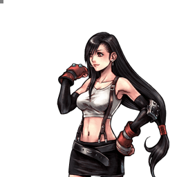
Final Fantasy VII
Tifa Lockhart
Mêlée mobile à feintes invincibles, dépendante des assists pour les dégâts
Vue d'ensemble
Tifa est une combattante de corps-à-corps dotée d'une vitesse de déplacement élevée (course rapide, dash très rapide) et de la capacité unique de feinter ses attaques. Son jeu au sol s'appuie sur des projectiles de priorité moyenne et sur un HP link (Waterkick vers Somersault), tandis que son jeu aérien est soutenu par des coups à tracking vertical.
Sa génération d'EX est correcte et son EX Burst compte parmi les plus dévastateurs du jeu lorsqu'il reste beaucoup de jauge EX. Son potentiel de dégâts avec les HP attacks est élevé grâce à une bravery de base importante et à l'assist Aerith en particulier.
En revanche, ses dégâts de bravery moyens restent faibles, l'utilité de ses feintes est limitée et ses capacités verticales en l'air sont en dessous de la moyenne, ce qui bride son efficacité globale. Les sources la décrivent comme un personnage low tier.
Forces
- Mobilité élevée : course rapide et dash très rapide.
- Feintes invincibles sur la plupart de ses attaques, une des rares sources d'invincibilité du jeu.
- HP link Somersault depuis Waterkick, qui lance des combos d'assist n'importe où.
- Potentiel de dégâts HP très élevé avec une bravery de base haute et l'assist Aerith (double assist combo à plus de 3000 HP).
- EX Burst parmi les plus puissants du jeu à jauge EX pleine.
- Jeu au sol solide, capable de rivaliser avec la plupart des stratégies de mêlée conventionnelles.
Faiblesses
- Dégâts de bravery moyens faibles (ATK de base très basse), momentum difficile à établir même sur hit.
- Utilité des feintes limitée : direction non contrôlable, pas de mixup vers une autre attaque, vulnérable après le teleport.
- Capacités verticales en l'air en dessous de la moyenne.
- Forte dépendance aux assists et aux Wall Rush pour convertir en dégâts significatifs.
- Difficultés d'approche contre les projectiles persistants, les pièges et le zoning (Garland, The Emperor, Ultimecia).
Stats & vitesses
| Nom | Tifa Lockhart (ティファ・ロックハート) |
|---|---|
| Jeu d'origine | Final Fantasy VII |
| ATK de base (LV100) | 108 (Very Low) |
| DEF de base (LV100) | 111 (Average) |
| Vitesse de course | 4 (Fast) |
| Vitesse de dash | 69 (Very Fast) |
| Vitesse de chute | 77 (Above Average) |
| Chute après esquive | 37 (Above Average) |
| BRV la plus rapide | 11F (Waterkick, Elbow Smash) |
| HP la plus rapide | 33F (Meteor Strike, Meteor Crusher) |
| HP en 1 coup | Burning Arrow |
| HP links | Yes |
| Command block | No |
| Armes | Grappling Weapons, Parrying Weapons, Poles, Rods, Staves |
| Armures | Bangles, Chestplates, Clothing, Gauntlets, Hairpins, Hats, Light Armor |
| Armes exclusives | Godhand, Premium Heart, Seventh Heaven |
| Unlock | Default |
| Camp | Cosmos |
| Doubleur (JP) | Ayumi Ito |
| Doubleur (ENG) | Rachael Leigh Cook |
Valeurs brutes du wiki (page personnage) — plus la valeur est basse, plus le personnage est rapide. Trait pointillé or : moyenne des 31 personnages.
Position dans la méta
Tier B 22ᵉ sur 30 — tier list tournoi 2017 de dissidia.wiki (moitié valeurs de matchups, moitié avis de joueurs experts).
Tifa est classée 22e, en tier B, sur la tier list compétitive de 2017. L'overview la qualifie de personnage low tier, freinée par ses dégâts de bravery moyens et son jeu aérien vertical limité.
Coups
Barre plus courte = coup plus rapide. Startup en frames (60 i/s, données dissidia.wiki), priorité indiquée après la valeur. Les coups marqués ★ sont les plus rapides du kit — ce sont en général vos meilleurs outils de punish et de pression.
Braveries
Au sol
Beat Rush Melee Low
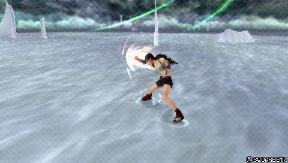
Combo de trois coups servant de punish au sol, d'option défensive grâce à sa feinte (la protection la plus rapide de Tifa après une esquive au sol) et de poke occasionnel. Chaque coup peut être retardé pour hit confirm un combo d'assist, avec une bonne génération d'EX (90). Un knockback cancel du troisième coup avec l'assist optimise ses 35 de dégâts de base.
| Dégâts de base | 35 (8, 11, 16) |
|---|---|
| Startup | 21F |
| Type | Physical |
| Priorité | Melee Low |
| EX Force | 90 |
| Effets | Chase, Feint |
| Cancels | Dodge, Feint (First hit) |
| CP (maîtrisé) | 30 (15) |
Blizzard Ranged Low
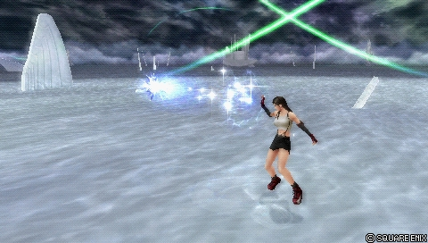
Projectile basse priorité « low risk, low reward » : il construit la jauge d'assist sur whiff et poke à mi-distance, avec un bon tracking vertical. La récompense sur hit est négligeable (dégâts, hit stun et knockback faibles) ; sa recovery courte évite toutefois les assist punishes réactifs.
| Dégâts de base | 10 |
|---|---|
| Startup | 31F |
| Type | Magical |
| Priorité | Ranged Low |
| EX Force | 0 |
| Effets | -- |
| Cancels | Dodge |
| CP (maîtrisé) | 30 (15) |
Blizzara Ranged Low Ranged Mid (Explosion)
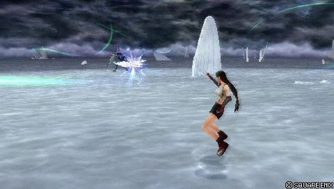
Projectile avançant qui Wall Rush au sol, puis devient une explosion Ranged Mid persistante en fin de course. Il occupe l'espace à mi-distance, punit les esquives sur read et prépare des combos d'assist sans s'exposer aux mixups rapprochés. Attention : Ranged Low au départ et recovery plus longue que Blizzard.
| Dégâts de base | 24 (1, 2 x 10, 3) |
|---|---|
| Startup | 31F |
| Type | Magical |
| Priorité | Ranged Low Ranged Mid (Explosion) |
| EX Force | 0 |
| Effets | Wall Rush |
| Cancels | Dodge |
| CP (maîtrisé) | 30 (15) |
Blizzaga Ranged Mid
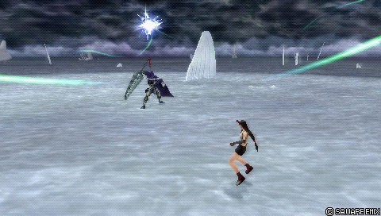
Le sort de glace le plus lent mais le plus rémunérateur (30 de base, Wall Rush au sol). Il apparaît au-dessus de l'adversaire et frappe assez tard pour que Tifa redevienne actionnable, ce qui ouvre un des rares combos solo (vers Waterkick ou Meteor Strike). Recovery la plus longue de ses Blizzard : gare aux assist punishes.
| Dégâts de base | 30 (1, 2 x 10, 9) |
|---|---|
| Startup | 93F |
| Type | Magical |
| Priorité | Ranged Mid |
| EX Force | 0 |
| Effets | Wall Rush |
| Cancels | Dodge |
| CP (maîtrisé) | 30 (15) |
Waterkick Melee Low
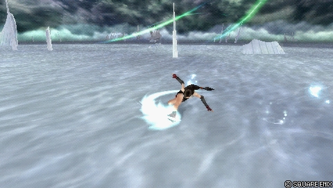
Poke et punish principal au sol, très rapide (11F), qui mène au HP link Somersault et donc aux combos d'assist. Ses nombreuses frames actives permettent un option select en martelant Carré puis en esquivant. Feinte possible sur le second coup pour changer de côté.
| Dégâts de base | 20 (8, 12) |
|---|---|
| Startup | 11F |
| Type | Physical |
| Priorité | Melee Low |
| EX Force | 30 |
| Effets | Wall Rush, Feint |
| Cancels | Dodge, Attack (Kick) Feint (Second Hit) |
| CP (maîtrisé) | 30 (15) |
En l’air
Elbow Smash Melee Low
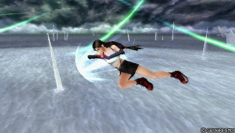
Poke aérien principal (11F, imblocable en réaction) : démarrage d'offense, construction de jauge, whiff punish et punition d'air dodge après Free Air Dash. C'est une de ses voies principales de conversion HP avec assist en l'air, mais ses dégâts de base faibles et ses 30 EX seulement en font un outil peu rémunérateur qu'elle est pourtant obligée d'utiliser souvent.
| Dégâts de base | 20 (8, 12) |
|---|---|
| Startup | 11F |
| Type | Physical |
| Priorité | Melee Low |
| EX Force | 30 |
| Effets | Wall Rush, Feint (both hits) |
| Cancels | Dodge, Attack (Elbow), Feint |
| CP (maîtrisé) | 30 (15) |
Falcon's Dive Melee Low
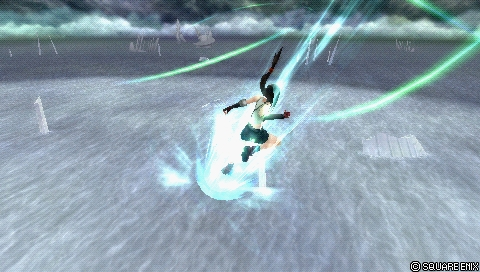
Divekick servant de poke aérien secondaire et de punish air-sol, avec une recovery courte annulable rapidement. Ses 26 de base et son Wall Rush quasi instantané en font une de ses braveries aériennes les plus dommageables, et le meilleur filler de combo avec l'assist Kuja.
| Dégâts de base | 26 |
|---|---|
| Startup | 23F |
| Type | Physical |
| Priorité | Melee Low |
| EX Force | 0 |
| Effets | Wall Rush, Feint |
| Cancels | Dodge, Feint |
| CP (maîtrisé) | 30 (15) |
Moonsault Kick Melee Low
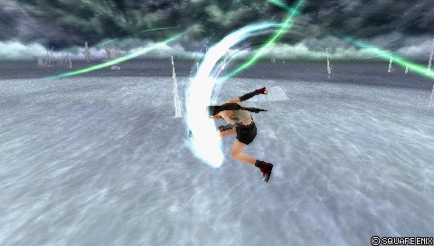
Attaque avançante en deux temps au startup réactable mais aux plus gros dégâts de base de son moveset (40), avec feinte instantanée et 90 EX. Elle démarre des combos d'assist sans mur, ce qui la rend précieuse avec Aerith. Deux feintes enchaînables (avant chaque partie) augmentent les critiques via Sneak Attack.
| Dégâts de base | 40 (9, 9, 2 x 3, 16) |
|---|---|
| Startup | 25F |
| Type | Physical |
| Priorité | Melee Low |
| EX Force | 90 |
| Effets | Chase, Feint |
| Cancels | Dodge, Feint (both parts) |
| CP (maîtrisé) | 30 (15) |
Dolphin Blow Melee Low
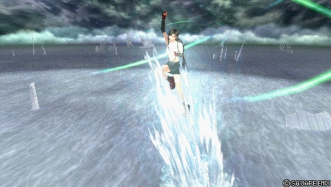
Uppercut multi-hit montant qui whiff punit les adversaires au-dessus de Tifa, deuxième bravery aérienne la plus dommageable. Dépend des Wall Rush au plafond pour vraiment rentabiliser, ce qui le rend situationnel (inutilisable par exemple contre le Knight's Lance chargé d'Ultimecia au plafond).
| Dégâts de base | 29 (1 x 5, 24) |
|---|---|
| Startup | 23F |
| Type | Physical |
| Priorité | Melee Low |
| EX Force | 30 |
| Effets | Wall Rush, Feint |
| Cancels | Dodge, Feint |
| CP (maîtrisé) | 30 (15) |
Blizzard Ranged Low
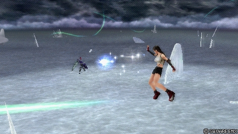
Projectile basse priorité « low risk, low reward » : il construit la jauge d'assist sur whiff et poke à mi-distance, avec un bon tracking vertical. La récompense sur hit est négligeable (dégâts, hit stun et knockback faibles) ; sa recovery courte évite toutefois les assist punishes réactifs.
| Dégâts de base | 10 |
|---|---|
| Startup | 31F |
| Type | Magical |
| Priorité | Ranged Low |
| EX Force | 0 |
| Effets | -- |
| Cancels | Dodge |
| CP (maîtrisé) | 30 (15) |
Attaques HP
Au sol
Meteodrive Melee High
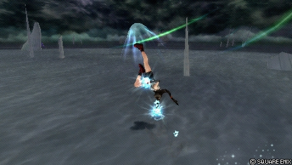
HP de courte portée avec Wall Rush au sol, utilisable en block punish, avec une feinte couvrant une bonne distance. Ses autres HP au sol couvrent plus de situations avec un meilleur potentiel : rarement prioritaire en compétitif.
| Dégâts de base | 15 |
|---|---|
| Startup | 39F |
| Type | Physical |
| Priorité | Melee High |
| EX Force | 30 |
| Effets | Wall Rush, Feint |
| Cancels | Dodge, Feint |
| CP (maîtrisé) | 30 (15) |
Meteor Strike Melee High
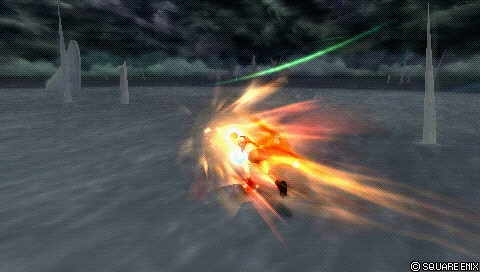
HP avançant chargeable aux plus gros dégâts de base de ses HP au sol, excellent starter et ender de combos d'assist (Wall Rush au sol, synergie avec la bravery de base haute et Side by Side). Sa posture basse esquive certaines attaques air-sol, et la feinte pendant les frames actives permet de re-charger, d'annuler un whiff ou de refléter des projectiles haute priorité.
| Normal | Half Charge | Full Charge | |
|---|---|---|---|
| Dégâts de base | 17 (1 x 2, 15) | 22 (1 x 7, 15) | 28 (1 x 13, 15) |
| Startup | An invisible predefined area that determines how an attack can come into contact with a character. If this makes contact with a character, the attack connects. Bigger hitbox means it's easier to land the attack. 7F after release || 42F, Hitbox 7F after release || 58F, Hitbox 7F after release | ||
| Type | Physical | Physical | Physical |
| Priorité | Melee High | Melee High | Melee High |
| EX Force | 3 per hit | 3 per hit | 3 per hit |
| Effets | Wall Rush, Feint | Wall Rush, Feint | Wall Rush, Feint |
| Cancels | Dodge, Feint | Dodge, Feint | Dodge, Feint |
Burning Arrow Melee High
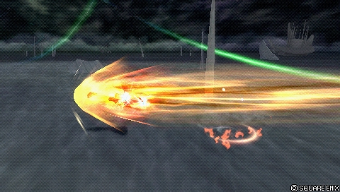
Seul HP mono-coup de Tifa : punish de mi-distance (surtout contre les esquives au sol), reflet fiable des projectiles haute priorité et réponse aux checkmates EX Revenge. Wall Rush sur les murs uniquement, ce qui limite ses routes de combo ; la feinte juste avant le coup sert de frein d'urgence.
| Startup | 47F |
|---|---|
| Priorité | Melee High |
| EX Force | 0 |
| Effets | Wall Rush, Feint |
| Cancels | Dodge, Feint |
| CP (maîtrisé) | 30 (15) |
Rolling Blaze Melee High
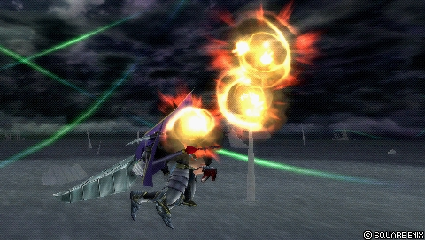
Coup essentiel dans ses deux versions : anti-air principal au sol, menace air-sol en l'air, avec hitbox haute priorité constante et Wall Rush au sol pour de gros dégâts avec assist. La feinte pendant la ruée initiale, suivie d'un second Rolling Blaze, étend énormément sa portée en ne laissant qu'une fenêtre de punition très courte. Faible portée latérale ; avec deux jauges et Aerith, c'est une de ses routes les plus dévastatrices.
| Dégâts de base | 7 (1 x 7) |
|---|---|
| Startup | 45F |
| Type | Physical |
| Priorité | Melee High |
| EX Force | 3 per hit (max 21) |
| Effets | Wall Rush, Feint |
| Cancels | Dodge, Feint |
| CP (maîtrisé) | 30 (15) |
Somersault Melee High
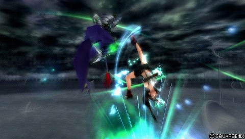
Son unique HP link (depuis Waterkick), très rapide, qui lance des combos d'assist n'importe où et remplit la jauge avec Side by Side. Impunissable même si l'adversaire s'échappe avec l'Assist Change LV1 : c'est ce coup qui rend Waterkick aussi menaçant.
| Dégâts de base | - (+Waterkick, 8 Total) |
|---|---|
| Startup | ? |
| Priorité | Melee High |
| EX Force | 60 / 90 |
| Cancels | Dodge |
| CP (maîtrisé) | 30 (15) |
En l’air
Rolling Blaze Melee High
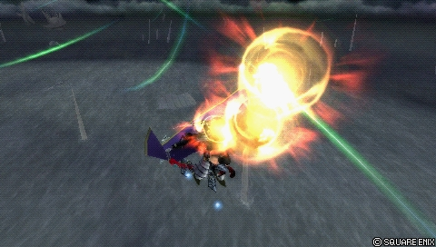
Coup essentiel dans ses deux versions : anti-air principal au sol, menace air-sol en l'air, avec hitbox haute priorité constante et Wall Rush au sol pour de gros dégâts avec assist. La feinte pendant la ruée initiale, suivie d'un second Rolling Blaze, étend énormément sa portée en ne laissant qu'une fenêtre de punition très courte. Faible portée latérale ; avec deux jauges et Aerith, c'est une de ses routes les plus dévastatrices.
| Dégâts de base | 7 (1 x 7) |
|---|---|
| Startup | 45F |
| Type | Physical |
| Priorité | Melee High |
| EX Force | 3 per hit (max 21) |
| Effets | Wall Rush, Feint |
| CP (maîtrisé) | 30 (15) |
Meteor Crusher Melee High
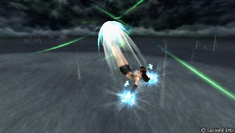
HP aérien chargeable, block punisher et ender de combo d'assist courant grâce à sa vitesse et à sa portée une fois chargé (à égalité de startup avec Meteor Strike non chargé). La charge augmente nettement la portée et autorise une feinte pendant l'approche. Pas de Wall Rush (récompense moindre en mid-screen) et multi-hit, donc inutilisable contre les checkmates EX Revenge.
| Dégâts de base | 10 (1 x 8, 2) |
|---|---|
| Startup | An invisible predefined area that determines how an attack can come into contact with a character. If this makes contact with a character, the attack connects. Bigger hitbox means it's easier to land the attack. 17F after release |
| Type | Physical |
| Priorité | Melee High |
| EX Force | 87 |
| Effets | Feint |
| Cancels | Dodge, Feint (During Charge) |
| CP (maîtrisé) | 30 (15) |
EX Mode: Equipped Premium Heart! & EX Burst
EX Mode « Equipped Premium Heart! » : Tifa gagne Regen, Critical Boost et l'effet Premium Heart, actif en permanence, qui augmente les dégâts infligés à mesure que la jauge EX est pleine.
EX Burst : Final Heaven est un EX Burst à sept rouleaux à arrêter sur le symbole « Yeah! » (rythme régulier d'environ 1 à 1,5 s entre les pressions, ou Auto EX Command Ω pour 20 CP). Ses dégâts dépendant de la jauge EX restante, il faut l'utiliser dès l'activation de l'EX Mode : à jauge pleine, c'est l'un des EX Bursts les plus puissants du jeu.
Mécanique unique
Tifa peut annuler la plupart de ses attaques en une feinte : un dash invincible qui traverse les adversaires, déclenché en pressant Croix pendant le startup (ex. Beat Rush > Croix > Beat Rush). Après la feinte, elle peut poursuivre l'attaque précédente ou attendre la fin de la feinte, avec environ une seconde de délai possible avant d'être verrouillée en recovery.
La feinte étend la portée d'une attaque et rend son timing ambigu (Rolling Blaze en est l'exemple le plus célèbre), notamment en attendant que le block adverse expire. Tifa avance toujours vers l'avant et ne passe derrière l'adversaire que si elle est assez proche : la direction n'est pas contrôlable et aucun mixup vers une autre attaque n'est possible après la feinte.
L'invincibilité en fait une excellente option défensive contre les tentatives de dodge punish, mais Tifa reste vulnérable après le teleport et pendant la recovery. Garder de la jauge d'assist pour couvrir ce moment aide ; il est conseillé d'utiliser les feintes avec parcimonie en début de match pour jauger la réaction adverse.
- Fenêtres de feinte : Beat Rush (avant le 1er coup), Waterkick (avant le 2e coup), Moonsault Kick (avant chaque partie), Falcon's Dive, Dolphin Blow, Meteodrive et Burning Arrow (avant le 1er coup), Meteor Strike (avant ou pendant le 1er coup, rechargeable après feinte), Rolling Blaze sol et air (pendant la première partie), Meteor Crusher (avant l'impact, non rechargeable après feinte).
- Contre-stratégies documentées : sortir de portée en courant ou en sautant, interrompre avec des attaques rapides (Beat Fang de Squall, Diamond Dust de Yuna), poursuivre avec une attaque à homing (Braver de Cloud, Inferno de Vaan), ou réagir avec un assist pour la prendre en tenaille.
| Attacks with feints | ||
|---|---|---|
| Attack | Feint window | Post-feint action |
| Beat Rush | Before first hit | Beat Rush |
| Waterkick | Before second hit | Second bravery hit of Waterkick |
| Moonsault Kick | Before either hit | First part or second part depending on feint timing |
| Falcon's Dive | Before first hit | Falcon's Dive |
| Dolphin Blow | Before first hit | Dolphin Blow |
| Meteodrive | Before first hit | Meteodrive |
| Meteor Strike | Before / during first hit | Meteor Strike (can be charged) |
| Burning Arrow | Before first hit | Burning Arrow |
| Rolling Blaze (both) | During first part | Rolling Blaze |
| Meteor Crusher | Before attack connects | Meteor Crusher (cannot be charged) |
Plan de jeu & techniques avancées
Le cœur du jeu de Tifa est au sol : Waterkick comme poke principal menant au HP link Somersault, Beat Rush en punish et en défense post-esquive, Rolling Blaze pour menacer l'espace aérien proche et punir les esquives. Les combos Somersault avec assist infligent des dégâts considérables avec une bravery de base haute, au point d'inciter l'adversaire à abandonner le sol.
En l'air, Elbow Smash est le poke de référence pour démarrer l'offense et remplir la jauge, complété par Moonsault Kick en mixup plus dommageable et Falcon's Dive en angle descendant sécurisé. Les sorts Blizzard permettent de garder la distance, de bâtir la jauge d'assist et d'interrompre l'adversaire sans s'engager dans les mixups rapprochés.
Presque toute la conversion en HP passe par les Wall Rush et l'assist : Rolling Blaze, Meteor Strike et Falcon's Dive en starters, Meteor Crusher et Rolling Blaze aérien en enders. Avec Kuja, Falcon's Dive doublé est son filler le plus dommageable ; avec Aerith, un HP garantit un enchaînement Seal Evil et le double assist combo peut dépasser 3000 HP de dégâts.
Les feintes servent d'abord défensivement (invincibilité après une esquive au sol) et pour repositionner derrière l'adversaire, mais à doser : une fois lues, elles s'interrompent avec des attaques rapides ou un assist. En build Side by Side, la jauge EX est gelée : il faut ramasser les EX Cores pour ne pas laisser à l'adversaire l'EX Force générée.
Techniques spécifiques
Waterkick option select
En martelant Carré pendant les frames actives de Waterkick puis en esquivant pendant la recovery du premier kick, Tifa couvre à la fois le hit (Somersault) et le whiff, ce qui la rend difficile à whiff punir en réaction.
Rolling Blaze feint extension
Feinter Rolling Blaze pendant la ruée initiale puis enchaîner un second Rolling Blaze étend énormément sa portée maximale, avec une fenêtre de vulnérabilité si brève que la punition exige un timing précis.
Double assist combo (Aerith)
Avec deux jauges d'assist : HP avec Wall Rush, Seal Evil d'Aerith, nouveau Wall Rush pendant le Seal Evil, second appel d'Aerith puis Rolling Blaze. Un seul combo peut dépasser 3000 HP de dégâts avec un build à haute bravery de base.
Knockback cancel (Beat Rush)
Annuler le knockback du troisième coup de Beat Rush avec un appel d'assist garde l'adversaire en place et rentabilise ses 35 de dégâts de base ; difficile à exécuter mais très rémunérateur, surtout avec l'extra ability Sneak Attack.
Blizzaga hit glitch (Meteor Strike)
Blizzaga peut provoquer un hit glitch sur Meteor Strike, envoyant les adversaires inattentifs dans un combo d'assist dommageable.
Moonsault Kick lock-off / knockback negation
Utilisé en lock off, Moonsault Kick se dirige librement pour bâtir la jauge en sécurité dans les grandes arènes. Un appel d'assist à un timing très précis pendant la ruée finale annule par ailleurs son knockback.
Techniques universelles (blodge, dash feint, lock off, dodge punishment) : voir la page Techniques & glitches.
Matchups
De manière générale, Tifa rivalise avec les personnages aux stratégies de mêlée conventionnelles près du sol. Elle peine en revanche à approcher les projectiles persistants (Garland) et les pièges (The Emperor) ; Ultimecia combine les deux avec un bon zoning. Contre Garland, elle n'a aucun moyen simple de contourner le HP Cyclone, mais l'assist BRV Seal Evil d'Aerith le contourne facilement.
Les matchups aériens peuvent aussi être difficiles (Sephiroth par exemple), entre pokes moyens et récompense sur hit décevante. Tifa n'a pas beaucoup de matchups gagnants, mais elle se bat bien au sol : quand elle peut s'y appuyer ou alterner sol et air, comme contre Firion, Jecht et Cecil, elle est bien placée pour faire de grosses actions.
Vidéos de matchs : Replay Theater — matchs de Tifa Lockhart.
Builds
Trois builds sont documentés, tous à 450 CP en supposant l'Equip Glitch. Le premier, Side by Side « all-rounder » (assist Kuja, Seventh Heaven, booster x2.7 constant), vise l'équilibre attaque/défense : équipement défensif (Hero's Shield contre les dégâts de Wall Rush HP), accessoires orientés depletion de meter et bravery boost sur block/dodge, bravery de base haute et Assist Critical Boost pour compenser ses dégâts moyens. Kuja convertit les Wall Rush, staggers et séquences de bravery inachevées.
Le deuxième, Side by Side à haute bravery de base (1623 BRV, assist Aerith, booster x3.5), maximise les dégâts : un HP, Seal Evil d'Aerith, puis un second HP une fois la bravery de base récupérée, pour plus de 3000 HP en un combo. Aerith est le seul assist compétitif qui convertit un Moonsault Kick complet sans mur, et le double assist combo est la signature du build. Side by Side gèle la jauge EX : il faut ramasser les EX Cores.
Le troisième, BRV Boost on Dodge (set Adamant Chains, booster x5.5, 146 BRV par esquive à plein régime), est réservé aux matchups où Tifa subit beaucoup de projectiles : il décourage le Shadow Flare de Sephiroth et aide contre The Emperor et Ultimecia, trois matchups qui restent difficiles même ainsi. La bravery supplémentaire justifie la prise de risque pour placer un HP.
| Stats | |
|---|---|
| HP | 10904 |
| CP | 450 |
| BRV | 1215 |
| ATK | 176 |
| DEF | 184 |
| LUK | 61 |
| Max Booster | x2.7 |
| Equipment | |
|---|---|
| Assist | Kuja |
| Weapon <img></img> | Seventh Heaven |
| Hand <img></img> | Hero's Shield <img></img> |
| Head <img></img> | Dueling Mask |
| Body <img></img> | Heavy Armor <img></img> |
| Accessory 1 | <img></img> Block Ring |
| Accessory 2 | <img></img> Zephyr Cloak |
| Accessory 3 | <img></img> Dismay Shock |
| Accessory 4 | <img></img> Battle Hammer |
| Accessory 5 | <img></img> Empty EX Gauge |
| Accessory 6 | <img></img> Pre-EX Mode |
| Accessory 7 | <img></img> Pre-EX Revenge |
| Accessory 8 | <img></img> Blue Gem |
| Accessory 9 | <img></img> Miracle Shoes |
| Accessory 10 | <img></img> Side by Side |
| Summon <img></img> | None |
| Bravery attacks | |
|---|---|
| Ground | Aerial |
| HP attacks | |
| Ground | Aerial |
| Bravery attacks | |
|---|---|
| Ground | Aerial |
| Beat Rush | Moonsault Kick |
| Waterkick | Falcon's Dive |
| Blizzaga | Elbow Smash |
| HP attacks | |
| Ground | Aerial |
| Rolling Blaze | Meteor Crusher |
| Burning Arrow | Rolling Blaze |
| Somersault (from Waterkick) |
| Basic Abilities | ||
|---|---|---|
| Actions | Support | Extra |
| Ground Evasion | Always Target Indicator | Precision Evasion |
| Midair Evasion | EX Core Lock On | Counterattack |
| Ground Block | Assist Lock On | Assist Critical Boost |
| Midair Block | Disable Sneak Attack | |
| Aerial Recovery | EXP to HP | |
| Recovery Attack | Master Guardsman | |
| Controlled Recovery | ||
| Wall Jump | ||
| Free Air Dash | ||
| Ground Dash | ||
| Free Air Dash Boost | ||
| Assist Gauge Up Dash | ||
| Speed Boost | ||
| Jump Times Boost | ||
| Ground Evasion Boost | ||
| Midair Evasion Boost | ||
| Evasion Boost |
Build overview
CP allocation
Substitutes
Attacks
Staple
| Bravery attacks | |
|---|---|
| Ground | Aerial |
| Beat Rush | Elbow Smash |
| Waterkick | Falcon's Dive |
| HP attacks | |
| Ground | Aerial |
| Rolling Blaze | Meteor Crusher |
| Somersault(from Waterkick) | Rolling Blaze |
Flexible
| Bravery attacks | |
|---|---|
| Ground | Aerial |
| Blizzara | Moonsault Kick |
| Blizzaga | Dolphin Blow |
| HP attacks | |
| Ground | Aerial |
| Meteor Strike | -- |
| Burning Arrow | -- |
Avoid
| Bravery attacks | |
|---|---|
| Ground | Aerial |
| Blizzard | -- |
| HP attacks | |
| Ground | Aerial |
| Meteodrive | -- |
| Stats | |
|---|---|
| HP | 9683 |
| CP | 450 |
| BRV | 1623 |
| ATK | 175 |
| DEF | 183 |
| LUK | 60 |
| Max Booster | x3.5 |
| Equipment | |
|---|---|
| Assist | Aerith |
| Weapon <img></img> | Piggy's Stick <img></img> |
| Hand <img></img> | Chainsaw <img></img> |
| Head <img></img> | Thornlet |
| Body <img></img> | Maximillian <img></img> |
| Accessory 1 | <img></img> Muscle Belt |
| Accessory 2 | <img></img> Sniper Eye |
| Accessory 3 | <img></img> Bravery Orb |
| Accessory 4 | <img></img> Dismay Shock |
| Accessory 5 | <img></img> Empty EX Gauge |
| Accessory 6 | <img></img> Summon Unused |
| Accessory 7 | <img></img> Pre-EX Mode |
| Accessory 8 | <img></img> Pre-EX Revenge |
| Accessory 9 | <img></img> Back-Breaking Straw |
| Accessory 10 | <img></img> Side by Side |
| Summon <img></img> | Rubicante |
| Bravery attacks | |
|---|---|
| Ground | Aerial |
| HP attacks | |
| Ground | Aerial |
| Bravery attacks | |
|---|---|
| Ground | Aerial |
| Waterkick | Moonsault Kick |
| Beat Rush | Elbow Smash |
| Blizzara | Falcon's Dive |
| HP attacks | |
| Ground | Aerial |
| Rolling Blaze | Meteor Crusher |
| Meteor Strike | Rolling Blaze |
| Somersault (from Waterkick) |
| Basic Abilities | ||
|---|---|---|
| Actions | Support | Extra |
| Ground Evasion | Always Target Indicator | Precision Evasion |
| Midair Evasion | EX Core Lock On | Disable Counterattack |
| Ground Block | Assist Lock On | EXP to Assist |
| Midair Block | Best Dresser | |
| Aerial Recovery | ||
| Recovery Attack | ||
| Controlled Recovery | ||
| Wall Jump | ||
| Air Dash | ||
| Free Air Dash | ||
| Ground Dash | ||
| Multi Air Slide | ||
| Free Air Dash Boost | ||
| Assist Gauge Up Dash | ||
| Speed Boost | ||
| Jump Boost | ||
| Jump Times Boost+ | ||
| Ground Evasion Boost | ||
| Midair Evasion Boost | ||
| Evasion Boost | ||
| Descent Speed Boost |
Build Overview
Point Allocation
Substitutes
| Equipment | Replacement | Notes |
|---|---|---|
| Muscle Belt <img></img> | Zephyr Cloak <img></img> / BRV = 0 <img></img> / Hero's Essence <img></img> / Great Gospel <img></img> / Hero's Seal <img></img> / Winged Boots <img></img> | Muscle Belt isn't crucial for damage output, so it can be replaced with one of the listed accessories for increased survivability, Capacity Points (extra abilities for increased crit rate, base HP or BRV) or bravery recovery. |
| Back-Breaking Straw <img></img> | Together as One <img></img> / accessory of your choice | Back-Breaking Straw negates Thornlet's bravery boost penalty on dodge and block. The damage output is still high even with the penalties, so if it doesn't feel deterring, it can be replaced with Together as One for more assist meter at the start which is good for stability. Otherwise this can be exchanged to suit the player preference or match-up. |
| Muscle Belt <img></img> and Summon Unused <img></img> | Battle Hammer <img></img> and BRV = 0 <img></img> | This is for adding assist depletion to the build. Muscle Belt doesn't benefit from BRV = 0 booster, whereas Battle Hammer does, so the booster is swapped out for something stronger and more consistent.BRV = 0 applies to wall rush damage and meter depletion. |
| Best Dresser (extra ability) | Master Guardsman (extra ability) | The base bravery (1623) can be reduced by 100 to raise the maximum health above 10,000 instead. |
Attacks
Staple
| Bravery attacks | |
|---|---|
| Ground | Aerial |
| Waterkick | Moonsault Kick |
| Beat Rush | Elbow Smash |
| HP attacks | |
| Ground | Aerial |
| Rolling Blaze | Meteor Crusher |
| Somersault(from Waterkick) | Rolling Blaze |
Flexible
| Bravery attacks | |
|---|---|
| Ground | Aerial |
| Blizzara | Falcon's Dive |
| Blizzaga | Dolphin Blow |
| HP attacks | |
| Ground | Aerial |
| Meteor Strike | -- |
| Burning Arrow | -- |
Avoid
| Bravery attacks | |
|---|---|
| Ground | Aerial |
| Blizzard | -- |
| HP attacks | |
| Ground | Aerial |
| Meteodrive | -- |
| Stats | |
|---|---|
| HP | 9972 |
| CP | 450 |
| BRV | 997 |
| ATK | 174 |
| DEF | 185 |
| LUK | 60 |
| Max Booster | x5.5 |
| Equipment | |
|---|---|
| Assist | Aerith / Tidus |
| Weapon <img></img> | Adamant Knife <img></img> |
| Hand <img></img> | Adamant Shield <img></img> |
| Head <img></img> | Dueling Mask |
| Body <img></img> | Adamant Vest <img></img> |
| Accessory 1 | <img></img> Zephyr Cloak |
| Accessory 2 | <img></img> Dismay Shock |
| Accessory 3 | <img></img> Battle Hammer |
| Accessory 4 | <img></img> BRV > Base Value |
| Accessory 5 | <img></img> Summon Unused |
| Accessory 6 | <img></img> Pre-EX Mode |
| Accessory 7 | <img></img> Pre-EX Revenge |
| Accessory 8 | <img></img> Aerial |
| Accessory 9 | <img></img> After 30 Seconds |
| Accessory 10 | <img></img> Tenacious Attacker |
| Summon <img></img> | Rubicante |
| Bravery attacks | |
|---|---|
| Ground | Aerial |
| HP attacks | |
| Ground | Aerial |
| Bravery attacks | |
|---|---|
| Ground | Aerial |
| Waterkick | Moonsault Kick |
| Beat Rush | Elbow Smash |
| Blizzaga | Dolphin Blow |
| HP attacks | |
| Ground | Aerial |
| Rolling Blaze | Meteor Crusher |
| Meteor Strike | Rolling Blaze |
| Somersault (from Waterkick) |
| Basic Abilities | ||
|---|---|---|
| Actions | Support | Extra |
| Ground Evasion | Always Target Indicator | Precision Evasion |
| Midair Evasion | EX Core Lock On | Disable Counterattack |
| Ground Block | Assist Lock On | EXP to HP |
| Midair Block | Best Dresser | |
| Aerial Recovery | ||
| Recovery Attack | ||
| Controlled Recovery | ||
| Wall Jump | ||
| Air Dash | ||
| Free Air Dash | ||
| Ground Dash | ||
| Multi Air Slide | ||
| Free Air Dash Boost | ||
| Assist Gauge Up Dash | ||
| Jump Boost | ||
| Jump Times Boost+ | ||
| Ground Evasion Boost | ||
| Midair Evasion Boost | ||
| Evasion Boost |
| Equipment | Replacement | Notes |
|---|---|---|
| <img></img> After 30 Seconds | <img></img> Opponent Summon Unused | 1.2 booster to 1.3 booster, a slight increase. The opponent does not have to equip a summon, so if they don't have a summon for the fight, this booster is useless. |
| <img></img> Dismay Shock | <img></img> Opponent Empty EX Gauge | If the opponent has Side by Side <img></img> equipped, this is another good 1.3 booster with consistent uptime. |
| <img></img> Tenacious Attacker | Free choice | -- |
Le build all-rounder n'a aucun CP libre (remplacer un accessoire par Hero's Essence au besoin) ; le build haute bravery laisse 15 à 25 CP libres selon les abilities retirées ; le build BRV Boost on Dodge laisse 25 CP libres. Des tables de substituts sont documentées (Muscle Belt, Back-Breaking Straw, Best Dresser/Master Guardsman, etc.).
Synergies d'assist
Tifa Lockhart en tant qu'assist
En tant qu'assist, Tifa dispose de Beat Rush (BRV sol, 21F, Chase), Falcon's Dive (BRV air, 23F, Wall Rush), Meteodrive (HP sol, 39F, Wall Rush) et Rolling Blaze (HP air, 45F, Wall Rush), tous apparaissant sur l'adversaire.
Elle est classée Low sur la tier list assist de Muggshotter.
Assists recommandées
- Kuja — Conversions sur poke et Wall Rush avec de gros dégâts de bravery, au prix d'un risque élevé de le voir verrouillé quand il est utilisé.
- Tidus — Mêmes conversions que Kuja avec moins de dégâts, mais un startup plus rapide et une animation d'assist BRV aérien plus courte, ce qui le rend plus sûr même si l'adversaire s'échappe avec l'Assist Change LV1.
- Aerith — Booste les dégâts près du sol avec des triples combos HP et convertit de manière fiable le chase de Moonsault Kick ; recommandée pour les builds Side by Side et/ou à haute bravery de base.
Tech communautaire
Sources
- https://dissidia.wiki/Tifa_Lockhart_(Dissidia_012)
- https://dissidia.wiki/Tifa_Lockhart_(Dissidia_012)/Matchups
- https://dissidia.wiki/Tier_List_(Dissidia_012)
- https://dissidia.wiki/Tier_List_(Assist)
Limites connues
- La section Combos du wiki est vide (documented: false) : aucun combo détaillé chiffré n'est fourni, seules les indications des notes de coups et de builds ont été utilisées.
- Aucune référence externe (section References vide) : pas de communityTech attribuable.
- Le tableau Forces/Faiblesses de l'overview est vide dans les données ; forces et faiblesses ont été déduites du texte de l'overview, des notes de coups et des matchups.
- Les gains de jauge d'assist (assistGain) ne sont renseignés pour aucun coup.
- Le startup de Somersault est inconnu dans les données (« ? »), et le type de dégâts de l'EX Burst est noté « ?? ».